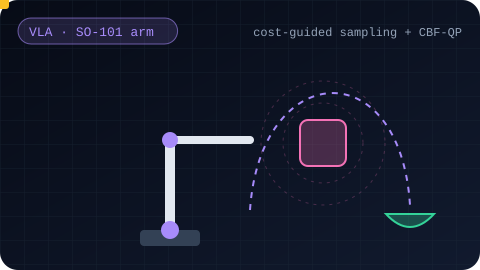
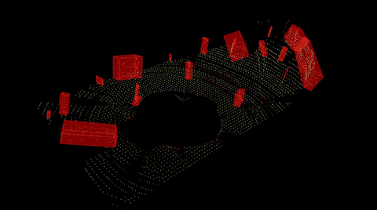
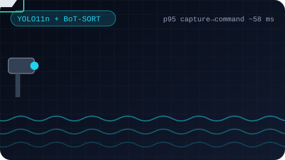
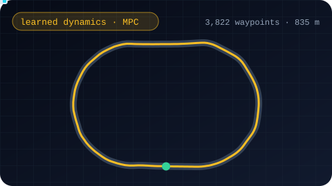
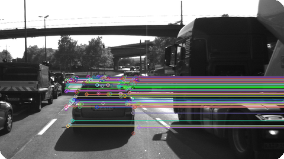
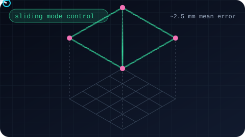

01 What I do
I work across the full robot loop, from raw sensors to motion, on cars, drones, robot arms, mobile robots and edge devices.
Perceive
LiDAR & camera pipelines, 3D detection, multi-object tracking
Estimate
Sensor fusion, Kalman / UKF filtering, attitude estimation
Plan
Motion planning, trajectory generation, learned dynamics
Control
MPC, sliding mode control, CBF safety filters
Interact
On-device speech, validated LLM tool calls, VLA policies
02 Things I've built

🎙️ On-Device Voice Interface
A robot that hears you across a noisy room, turns to face you, acts through validated LLM tool calls, and stops the instant you say "stop". No cloud.

🦾 Obstacle-Aware VLA Arm
Steering a fine-tuned vision-language-action policy around obstacles it never saw in training, using live depth costs inside its sampler plus a CBF-QP safety filter.

🛰️ LiDAR 3D Object Detection
Raw point clouds → ground removal → clusters → tracked 3D boxes, with RANSAC, KD-tree and Euclidean clustering written from scratch.

🎯 Marine Pan-Tilt Tracker
A hobby-parts pan/tilt rig that spots a small boat and keeps it in frame, with an Arduino guarding the servos. p95 capture-to-command ≈ 58 ms.

🔊 edge_audio
Why run Whisper on music and fan noise? A microsecond-scale learned gate decides what's worth transcribing: F1 0.920, about a third fewer ASR calls.

🚗 Learned Dynamics + MPC
A neural network learns how a car drives; a model-predictive controller then uses it to follow an 835 m, 3,822-waypoint path in simulation.

👁️ Camera Feature Tracking
Tracking the car ahead frame-to-frame by benchmarking keypoint detectors and descriptors on real driving data.

🚁 Sliding-Mode Quadrotor Control
A robust controller that flies a Crazyflie through quintic-trajectory waypoints with ~2.5 mm mean tracking error.
More experiments
- LiDAR + camera 3D object tracking
- UKF LiDAR / RADAR fusion
- Aerial autonomy: attitude estimation, window perception, flying through trees
- PlanTF autonomous-driving stack extension
- Motion planning in dynamic environments
- State estimation & localization for self-driving cars
- Reinforcement learning
- Panoptic segmentation
- Synthesizing ultrasound images from CT volumes
03 Background
🎓 Education
MS, Robotics Engineering · Worcester Polytechnic Institute
Research in the Manipulation and Environmental Robotics Lab with Prof. Berk Calli
B.Tech, Mechanical Engineering · VIT
🏭 Industry work
- Perception & ML stack for a security robot
- Precise docking for autonomous mobile robots
- Enterprise software consulting
Details in my CV and portfolio deck.